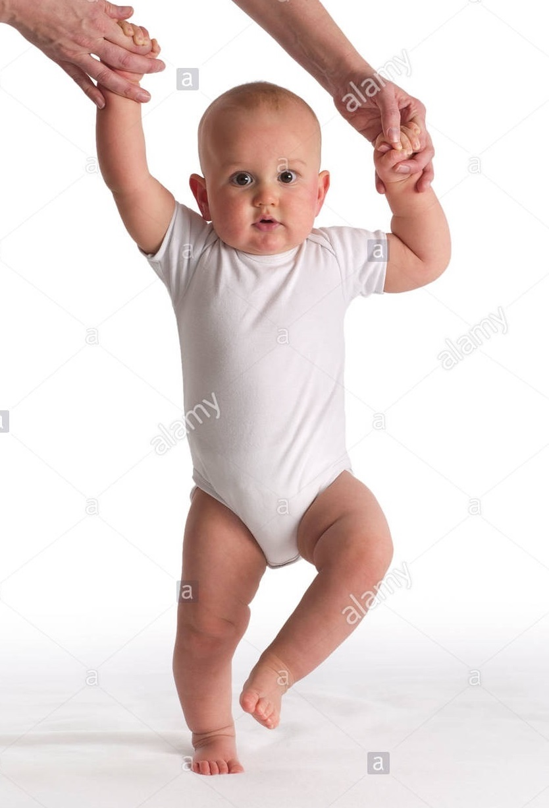
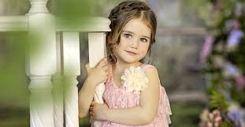

Now let me guess your here to learn about the human cycle.
If you are please feel free to read on.
Today in cycle school we will be learning about the human cycle.
On this website we will learn about all the different stages of the human cycle.
Once you have read all the stages there will be a quiz at the bottom of the page.
{oh and BTW this is a very long website, so if your looking for one specific paragraph I advice skip to the bit that you are looking for.}
Newborn and Baby
The very first stage of the human cycle is new born.
New born is when the human has come out straight from the parents stomache.
Newborn is when the human has been alive for 4 weeks{1 month}.
Newborn usually refers to a baby from birth to about 2 months of age.
When the human goes from newborn to a baby they start to understand some things but not yet all things.
Which means you could start to teach it to walk.
If its unable to walk try crawling first.
{BTW most people start with crawling before going into walking}.
food for a baby and for a new born

Some of the baby food brands in the uk are:
- Ella's Kitchen
- Cows Gate
- Organix
Newborns usually drink milk produced from the mother
nothing else beacuse newborns dont have teeth to chew their food.
But when they grow into the baby stage they dont just have to drink milk
they can start having some special snacks just for babys such as:
- rice cakes
- Veggie Straws.
- porridge
Unfortuneatly,consumer health group says almost all baby food contains at least one toxic chemical.
Researchers said the amounts of toxins in baby food are small
but the chemical contamination can build up over time.
Experts advise parents to avoid rice-based products and feed infants foods such as oatmeal.
Thats it for babys and newborns
Time for toddlers
Toddlers

Now toddlers they understand even more things now than when the human was a baby.
Once they have learnt to walk you can teach them sports.
A toddler is normally when the human is 12 to 36 months.
The toddler years are a time of great cognitive, emotional and social development.
The word is derived from "to toddle"
which means to walk unsteadily, like a child of this age.
Toddlers are a lot like teenagers, which means they can be very moody.
They are either ecstatic or enraged, and their moods are variable.
They also tend to have a hard time making transitions
such as going from sleep to waking or switching from one activity to another.
Toddlers sometimes have trouble controlling their emotions.
A young child has had very little practice in managing his changing moods and emotions
so he's very easily swept away by strong feelings
Toddlers don't have the logic and reasoning skills to move beyond their outrage.
Now moving on to the good things about toddlers
Here is a short list of things you can still enjoy about toddlers even though they changing so fast!
- The joy they get from the smallest things.
- They're perfectly cuddly.
- They still take naps.
- Their style is unique.
- They have no filter.
- They still need you.
They have tons of energy
Toddlers seem to have an endless supply of energy and it can be challenging to keep up.
Which is good at some times but bad if you trying to put them to sleep.
They love to learn which is extra good because then you will have a good educated child
who is most likely to forfill a dream and succeed at it.
They are ready for a big-kid bed so you adults dont need to be squashed up in bed every night.
They always want to help.
They need discipline.
And the best of all they soak up your love and affection.
Once they have got to a sertain point in life they can start going to nurserys.
In the nursery they will help your child with all sorts of useful things.
Like in P.E the will help your child achive the skill of balence and acuracy
I hope you've learnt alot of things to either help your toddler of just to learn about them for fun.
Now its time to move on to move on to child.
Child
Now children let me see,ah ha they are quite responsible and senseble.
Racing To Grow. A child's brain has its most dramatic growth period from birth until the age of 5.
Know How To Party. Babies and kids can laugh up to 300 times a day!
A child is when the human is about 3-12 years old.
From that age children start to experience technolegy and what it can do.
They start to get interested in games mabye on a ipad or a phone.
Most games have a age limit so I surgest go to the website net aware.
That website shows the official age limit
,the age that childen think it should be and
what adulds think it sould be.
Children at the ages from 4-11 will go to a primary school.
Here is a list that shows the ages and the year groups up until year 6
- Ages 4-5 is Reception
- Ages 5-6 is year 1
- Ages 6-7 is year 2
- Ages 7-8 is year 3
- Ages 8-9 is year 4
- Ages 9-10 is year 5
- Ages 10-11 is year 6
In school the children learn alot but
you still need to do learning at home; just a little bit though.
Too much learning can throw them off because their brains hasn't had a time to relax.
So it is very important to stay relaxed and calm and not getting too stressed.
Learning is a crucial part of the childs life because it helps the figure difficult things as the get older.
Now,talking about things most of you adulds will benefit from the most,
How to prevent tantrums from happening!
The first thing about prevent tantrums is to give them lots of attention.
If the child{children}don't get attention they feel alone and that causes them the do what ever it takes to get your attention.
Also it's good to feed them on time so they don't get cranky and to make sure the get enough sleep.
Going back to talking about education it is so important for a child to learn how to read.
Here are some reasons why it's so important for a child to read